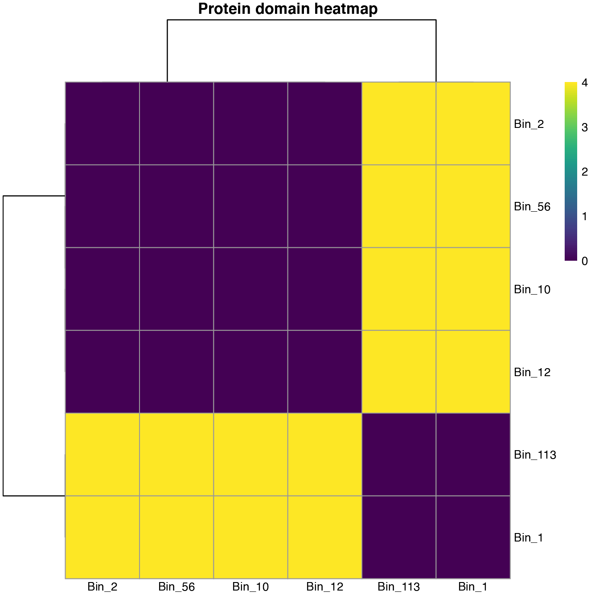
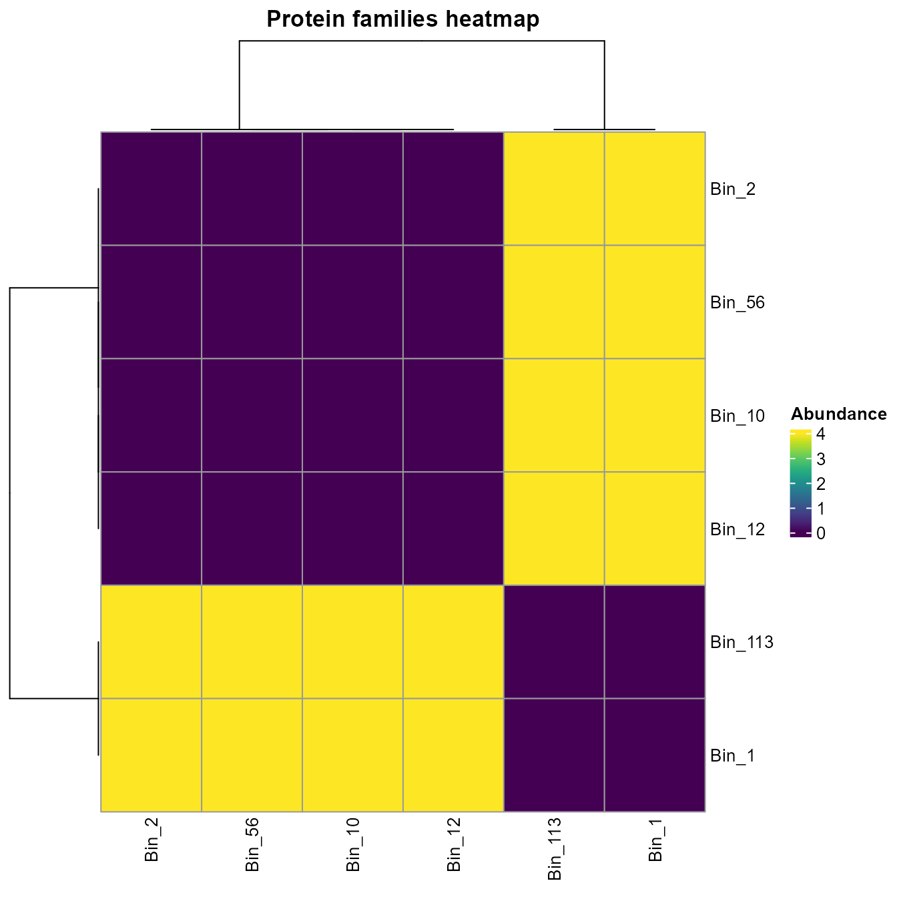
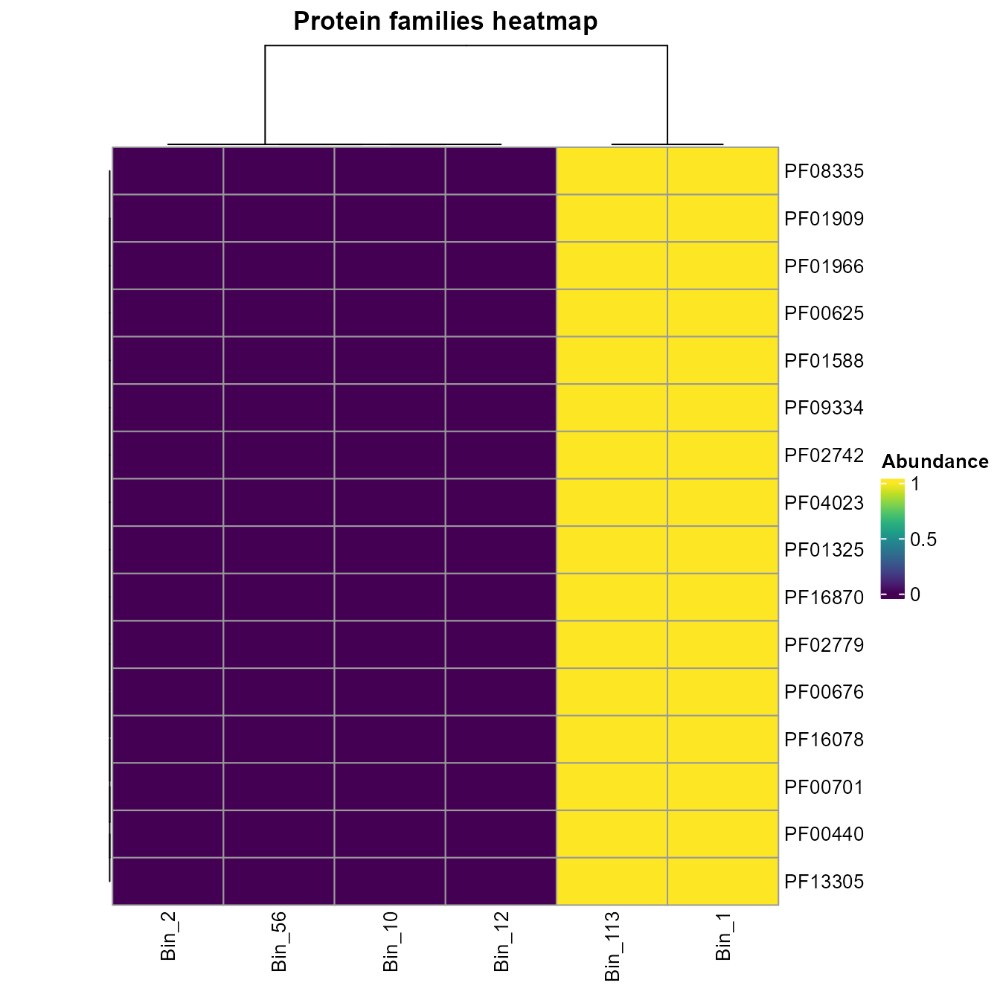
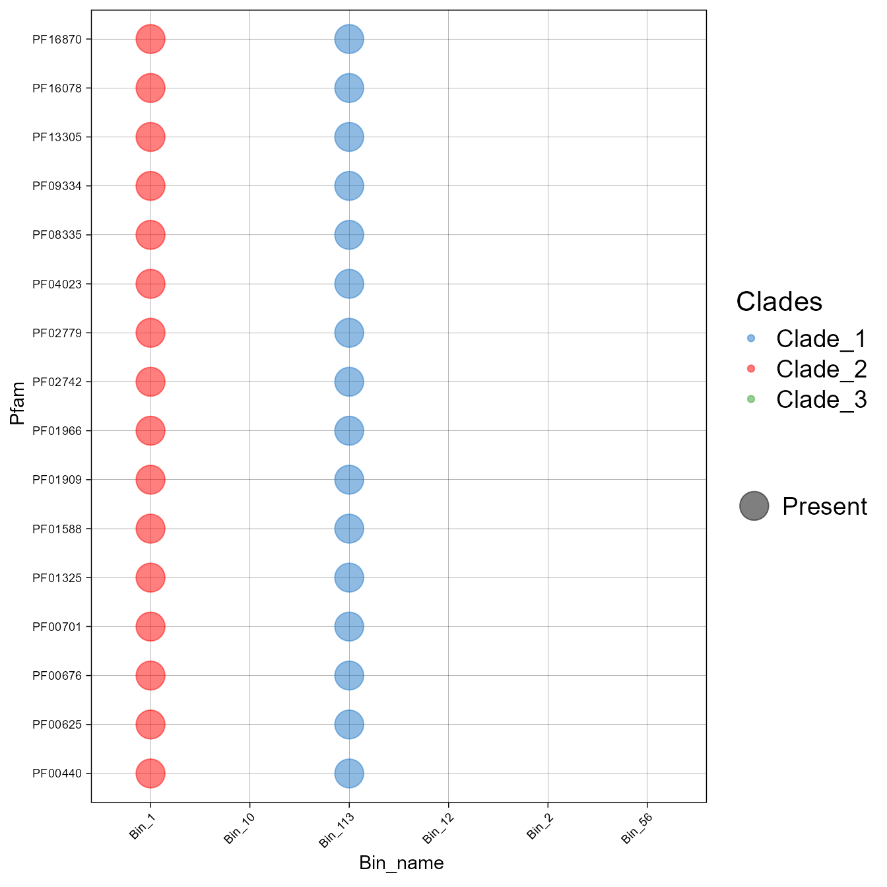
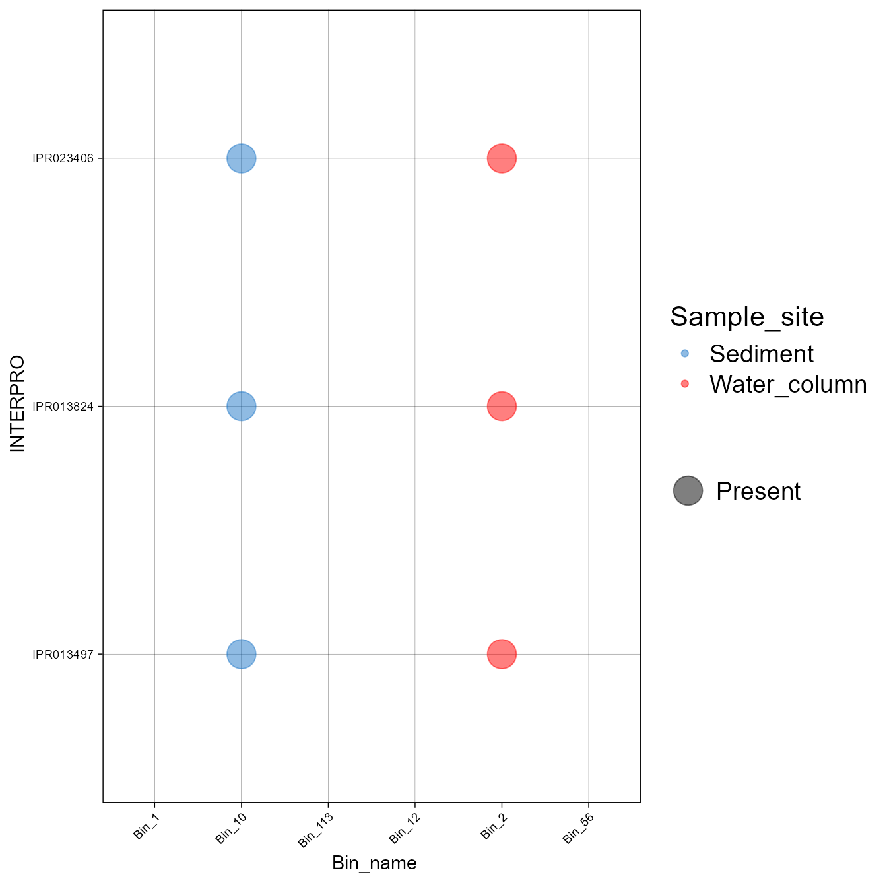
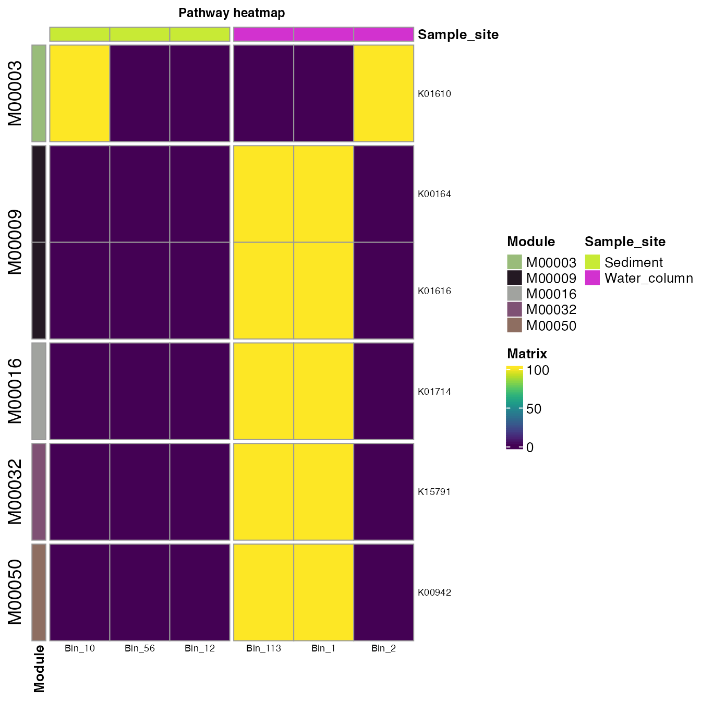

vignettes/Explore_InterProScan_profile.Rmd
Explore_InterProScan_profile.RmdFirst, load the rbims package.
First I will read the InterProScan output in a long format and extract the PFAM abundance information.
If you want to follow the example you can download the use rbims test file.
interpro_pfam_long<-read_interpro(data_interpro = "Interpro_test.tsv", database="PFAM", profile = F)You can use the subsetting functions to create subsets of the InterPro profile table. Here we will extract the most important PFAMs, and we need to use them as input the not profile output from read_interpro.
The function get_subset_pca calculates a PCA over the data to find the PFAM that explains variation within the data.
important_PFAMs<-get_subset_pca(tibble_rbims=interpro_pfam_profile,
cos2_val=0.95,
analysis="PFAM")
#> Warning in get_subset_pca(tibble_rbims = interpro_pfam_profile, cos2_val =
#> 0.95, : Contribution of the first dimention is less or equal to 0.97
head(important_PFAMs)
#> # A tibble: 6 x 8
#> PFAM domain_name Bin_10 Bin_12 Bin_56 Bin_113 Bin_1 Bin_2
#> <chr> <chr> <int> <int> <int> <int> <int> <int>
#> 1 PF00440 Bacterial regulatory protein… 0 0 0 1 1 0
#> 2 PF13305 WHG domain 0 0 0 1 1 0
#> 3 PF00701 Dihydrodipicolinate syntheta… 0 0 0 1 1 0
#> 4 PF16078 2-oxoglutarate dehydrogenase… 0 0 0 1 1 0
#> 5 PF00676 Dehydrogenase E1 component 0 0 0 1 1 0
#> 6 PF02779 Transketolase, pyrimidine bi… 0 0 0 1 1 0Let’s plot the results.
plot_heatmap can help to explore the results. We can perform two types of analysis; if we set the distance option as TRUE, we can plot to show how the samples could cluster based on the protein domains.
plot_heatmap(important_PFAMs, y_axis=PFAM, analysis = "INTERPRO", distance = T)
If we set that to FALSE, we observed the presence and absence of the domains across the genome samples.
plot_heatmap(important_PFAMs, y_axis=PFAM, analysis = "INTERPRO", distance = F)
plot_heatmap(important_PFAMs, y_axis=PFAM, analysis = "INTERPRO", distance = F)
We can also visualize using a bubble plot.
plot_bubble(important_PFAMs,
y_axis=PFAM,
x_axis=Bin_name,
analysis = "INTERPRO",
data_experiment = metadata,
color_character = Clades)
#> Warning: Removed 64 rows containing missing values (geom_point).
First I will read the InterProScan output in a wide format and extract the PFAM abundance information.
interpro_INTERPRO_profile<-read_interpro(data_interpro = "Interpro_test.tsv", database="INTERPRO", profile = F)
head(interpro_INTERPRO_profile)We are going to look for the InterProScan IDs that conform the DNA topoisomerase 1. For that we will create a vector of the IDs associated to that enzyme.
DNA_topoisomerase_1<-c("IPR013497", "IPR023406", "IPR013824")With the function get_subset_pathway we can crate a subset of the INTERPRO table.
DNA_tipo_INTERPRO<-get_subset_pathway(interpro_INTERPRO_profile, type_of_interest_feature=INTERPRO,
interest_feature=DNA_topoisomerase_1)
head(DNA_tipo_INTERPRO)
#> # A tibble: 3 x 8
#> INTERPRO domain_name Bin_10 Bin_12 Bin_56 Bin_113 Bin_1 Bin_2
#> <chr> <chr> <int> <int> <int> <int> <int> <int>
#> 1 IPR013497 DNA topoisomerase, type IA… 1 0 0 0 0 1
#> 2 IPR023406 DNA topoisomerase, type IA… 1 0 0 0 0 1
#> 3 IPR013824 DNA topoisomerase, type IA… 1 0 0 0 0 1We can create a bubble plot to visualize the distribution of these enzymes across the bins.
plot_bubble(DNA_tipo_INTERPRO,
y_axis=INTERPRO,
x_axis=Bin_name,
analysis = "INTERPRO",
data_experiment = metadata,
color_character = Sample_site)
#> Warning: Removed 12 rows containing missing values (geom_point).
First, I will read the InterProScan output in a long format and extract the KEGG information. When you use the KEGG option, the profile option is disabled.
interpro_KEGG_long<-read_interpro(data_interpro = "Interpro_test.tsv", database="KEGG")
head(interpro_KEGG_long)
#> # A tibble: 6 x 3
#> Scaffold_full_name Pathway Enzyme
#> <chr> <chr> <chr>
#> 1 Bin_113-scaffold_66_c1_109 map00261 ec:4.3.3.7
#> 2 Bin_113-scaffold_66_c1_109 map00300 ec:4.3.3.7
#> 3 Bin_1-scaffold_21_c1_109 map00261 ec:4.3.3.7
#> 4 Bin_1-scaffold_21_c1_109 map00300 ec:4.3.3.7
#> 5 Bin_2-scaffold_3_c1_159 map00010 ec:4.1.1.49
#> 6 Bin_2-scaffold_3_c1_159 map00020 ec:4.1.1.49We can use the mapping_ko function here to get the extended KEGG table.
interpro_map<-mapping_ko(tibble_interpro = interpro_KEGG_long)
head(interpro_map)
#> # A tibble: 6 x 19
#> Module Module_description Pathway Pathway_descript… Cycle Pathway_cycle
#> <chr> <chr> <chr> <chr> <chr> <chr>
#> 1 M00016 Lysine biosynthesis, suc… map002… Monobactam biosy… <NA> <NA>
#> 2 M00525 Lysine biosynthesis, ace… map002… Monobactam biosy… <NA> <NA>
#> 3 M00526 Lysine biosynthesis, DAP… map002… Monobactam biosy… <NA> <NA>
#> 4 M00527 Lysine biosynthesis, DAP… map002… Monobactam biosy… <NA> <NA>
#> 5 M00016 Lysine biosynthesis, suc… map003… Lysine biosynthe… <NA> <NA>
#> 6 M00525 Lysine biosynthesis, ace… map003… Lysine biosynthe… <NA> <NA>
#> # … with 13 more variables: Detail_cycle <chr>, Genes <chr>,
#> # Gene_description <chr>, Enzyme <chr>, KO <chr>, rbims_pathway <chr>,
#> # rbims_sub_pathway <chr>, Bin_113 <int>, Bin_1 <int>, Bin_2 <int>,
#> # Bin_10 <int>, Bin_56 <int>, Bin_12 <int>We can plot all the KOs and the Modules to which they belong. An important thing here is that we will set analysis = "KEGG" despite this workflow started with the InterProScan output in analysis.
plot_heatmap(tibble_ko=interpro_map,
data_experiment = metadata,
y_axis=KO,
order_y = Module,
order_x = Sample_site,
split_y = TRUE,
analysis = "KEGG",
calc="Percentage")